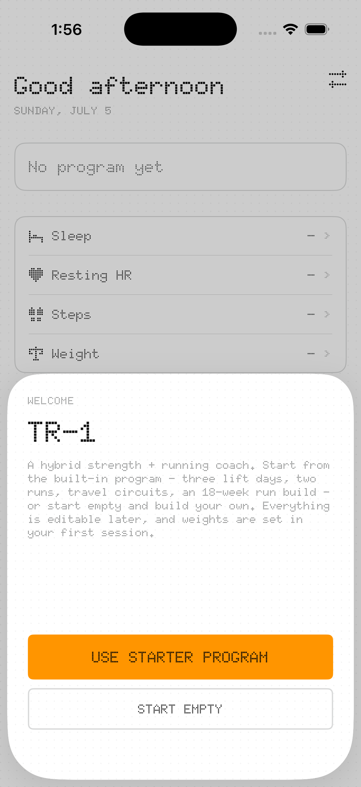

Today
One screen tells you what's owed today — lift, run, or rest — with weather-aware run windows on run days.
A hybrid strength + running coach for iPhone. It prescribes today's session, progresses your lifts automatically, builds your running volume week over week, and pulls the rest of the picture — runs, weight, sleep, resting heart rate, steps — from Apple Health.

One screen tells you what's owed today — lift, run, or rest — with weather-aware run windows on run days.
Step-through sets with an automatic rest timer and chime. Weights progress by double progression: hit the top of the rep range, the load moves up.
Easy + long runs build gradually over 18 weeks, with a Zone-2 heart-rate band computed from your own Health data.
No equipment? Hotel gym? Pull-up bar only? Each lift day has circuit variants — and a two-minute Minimum floor for the worst days.
Watch runs, weight, sleep, resting HR, and steps import automatically; finished lifts write back to Apple Fitness.
The whole program is editable in-app — days, exercises, sets, reps, the run ramp. There's a Home-Screen widget too.